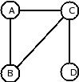
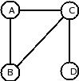
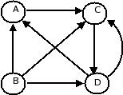
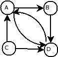
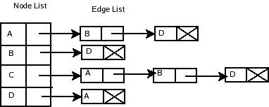
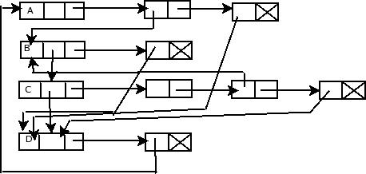

Graph Representation
To represent a graph we have to represent two things:nodes and edges.Graphs
are generally represented either in "sequential representation" or
"linked representation".
Sequential representation uses a two-dimentional array where as linked
representation uses a linked list. We refer graph means directed graphs
unless specified otherwise
Sequential Representation:-
A graph is conveniently represented by a matrix ( two-dimentional array)
called adjacency matrix ( or incidence matrix).A graph containing n nodes
can be represented by a matrix containing n rows and n columns.
Adjacency matrix:-
The Adjacency matrix A of a graph G=(V,E) with n nodes is an n*n
matrix such that:
Aij={1 – if there is an edge between vi and vj.
0 – otherwise
}
Essentially,adjacency matrix represents which vertices are adjacent,or
rather,which two vertices have an edge.
 Directed Graph
Adjacency matrix for the above fig is:
A B C D
A 0 0 1 0
B 1 0 0 1
C 0 1 0 1
D 1 0 1 0
Each position of adjacency matrix represents whether one node is
connected to another (value 1 or true) or not (value 0 or false).Note that
it encodes the direction of the edges.For example,since there is a 1 row
B,column A,there is an edge from B to A.
Since there is no edge in the reverse direction(from A to B),row A,column B
has a 0.
If a matrix contains only 0's and 1's then it is called bit matrix
or boolean matrix.The total number of 1’s in the matrix represents the
number of edges in that directed graph.
The adjacency matrix for a undirected graph is a symmetric matrix.Because an
edge(A,B) means that both (A,B) and (B,A).

Fig:Undirected Graph
Adjacency matrix for the above fig is
A B C D
A 0 1 1 0
B 1 0 1 0
C 1 1 0 1
D 0 0 1 0
In Undirected graph ,the sum of a ith row elements gives the degree if ith
node .In case of directed graph,the sum of ith row elements give the out
degree of the ith node and the sum of jth column elements gives the in
degree of the jth node.
The adjacency matrix for a null graph is null matrix.
Directed Graph
Adjacency matrix for the above fig is:
A B C D
A 0 0 1 0
B 1 0 0 1
C 0 1 0 1
D 1 0 1 0
Each position of adjacency matrix represents whether one node is
connected to another (value 1 or true) or not (value 0 or false).Note that
it encodes the direction of the edges.For example,since there is a 1 row
B,column A,there is an edge from B to A.
Since there is no edge in the reverse direction(from A to B),row A,column B
has a 0.
If a matrix contains only 0's and 1's then it is called bit matrix
or boolean matrix.The total number of 1’s in the matrix represents the
number of edges in that directed graph.
The adjacency matrix for a undirected graph is a symmetric matrix.Because an
edge(A,B) means that both (A,B) and (B,A).

Fig:Undirected Graph
Adjacency matrix for the above fig is
A B C D
A 0 1 1 0
B 1 0 1 0
C 1 1 0 1
D 0 0 1 0
In Undirected graph ,the sum of a ith row elements gives the degree if ith
node .In case of directed graph,the sum of ith row elements give the out
degree of the ith node and the sum of jth column elements gives the in
degree of the jth node.
The adjacency matrix for a null graph is null matrix.
i.e., all
elements are zero. The adjacency matrix representation has a special
importance if it was multiples repetitively by itself. A non-zero for Aij
element in the matrix. A^k represents that the number of paths length k
between vi and vj.

A B C D
A 0 0 1 0
Adjacency Matrix= A= B 1 0 0 1
C 0 1 0 1
D 1 0 1 0
A B C D
A 0 1 0 1
Then A²= B 1 0 2 0
C 2 0 1 1
D 0 1 1 1
A B C D
A 2 0 1 1
Then A³= B 0 2 1 2
C 1 1 3 1
D 2 1 1 2
Observe from the matrix A² there are two paths of length 2 from B to C and
C to A; and from the matrix A³,there are two paths of length 3 from A to A,B
to B,B to D,D to A and D to D, and three paths of length 3 from C to C.
Sometimes for weighted graph,the presence of an edge in adjacency matrix is
represented by its weight instead of simply one.
A small variation to adjacency matrix is "path matrix" which is
useful to determine whether there is a path between any two nodes in a
graph;If there is a path between any vi and vj then the corresponding
element of path matrix contains 1 otherwise 0.
The path matrix for the above directed graph is
A B C D
A 1 0 1 1
B 1 0 1 1
C 1 0 1 1
D 1 0 1 1
Disadvantages of Adjacency Matrix:-
1)Graphs with few edges would have a lot of wasteful zeros in the adjacency
matrix .That is, the corresponding adjacency matrix is sparse.
2)Insertion and deletion of nodes is fficult.
Linked Representation:-
In this representation we maintain an adjacency list.In adjacency list,for
each node,we keep a list of all adjacent nodes.

Directed Graph
The adjacency list for above directed graph is
Adjacency list
Adjacing list structures using two dimensional array and single linked
lists.


fig:Adjacency list structure using single linked list and double linked
list Thelinked representation,using linked list,maintain two kinds of
lists;a node list NODE and an edge list EDGE.
In node list,each node corresponding to a node in Graph G,and it contains
the following three fields:
a) NODE:-- contains the value of the node in the graph.
b) NEXT:-- contains a pointer that points to next node in the node list
and
c) ADJACENT:-- contains pointer that points to the first node of adjacency
list of the node
Each node in the node list can have other fields which may contain the
information associated with the node.
In edge list,each node corresponds to an edge of graph G.A node in the edge
list contain two fields.
a)TERMINAL- contains a pointer that points to node in the list which is
terminal node of the edge in the graph
b)PTR- contains a pointer that points to next node in the adjacency list
which are all initaited from same node in the graph.
Like node list,edge list also may have any other informatio,One such
important field is the weight field,if an edge is associated with height.
In the adjacency list representation,each edge appers in two lists and thus
the space usage essentially doubles.
Back
Back To Main
|